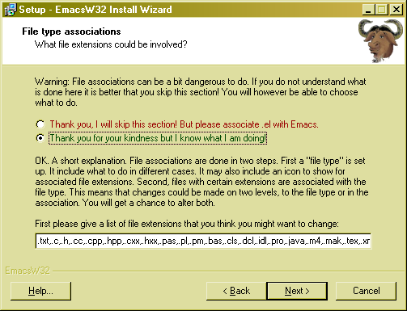
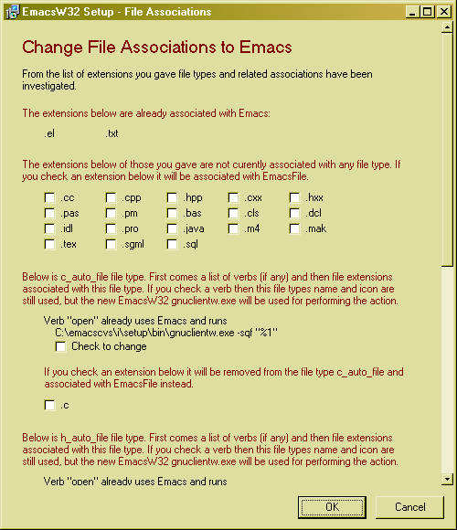
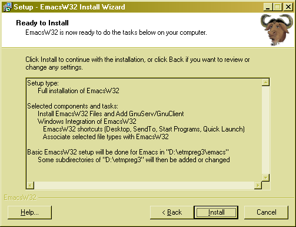

EmacsW32 Install Wizard will install EmacsW32 on your computer. The Install Wizard is a rather normal MS Windows installation program. Like for any wellbehaved installation program nothing is done until you in the last step click the "Install" button.
Some of the steps in the installation are explained below.
| On this page: |
The drop-down list contains predefined choices, but you may also check the individual alternatives. The alternatives are:
This step is maybe a bit complicated. It is not necessary to do it however. If you want to do it then you probably want to choose the second alternative. The screen will look like this after that:
You can change the list of file extension to those you want. The list will be inspected by the installer and it will show you which the current associations are when you click next:
On this page you can then choose the file extensions you want to associate with Emacs. File types have a name, like EmacsFile. For a given file there can be several verbs. The most common verbs are "Open" (meant to open a file) and "Print" (meant to print a file). For each verb for a file type you can define what action to take.
When you have done all your choices for the installation a screen will be shown with a summary of that. Nothing is actually installed until you click "Install" here.
